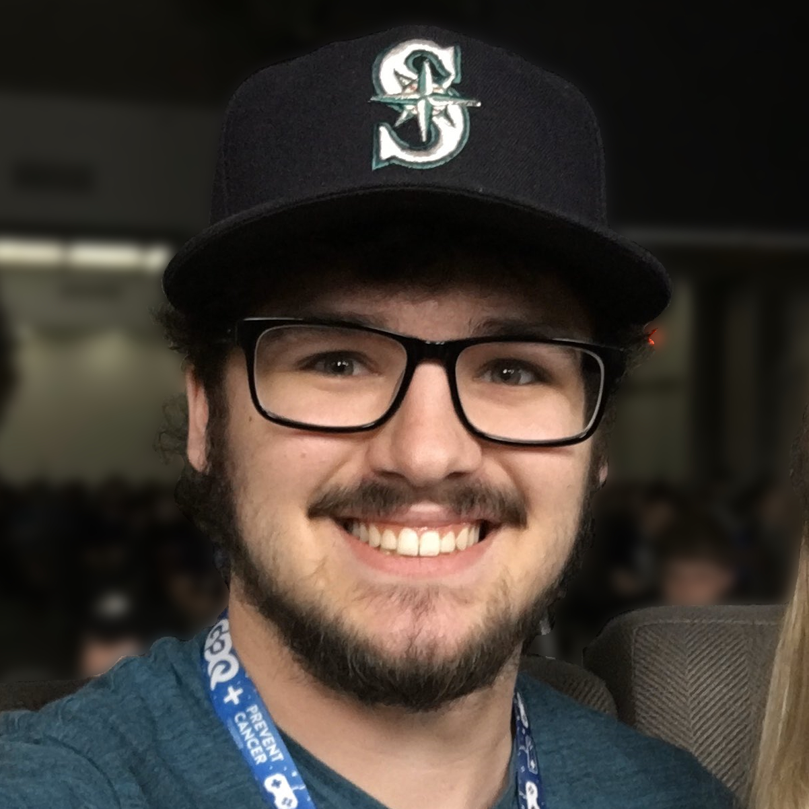

 I'm a Twitch streamer and speedrunner from Michigan. I am mostly known for my work with Super Mario World, but I have also speedrun other games such as Super Mario Sunshine, Super Mario Odyssey, Paper Mario: TTYD, and Pikmin.
I started speedrunning in 2014, and have created many strat videos and tutorials for the community to use.
I also create tool-assisted speedruns (TAS) of Super Mario World and its romhacks. In 2020, I completed a 100% TAS of Return To Dinosaur Land, which you can view here. I am always working on other projects as well.